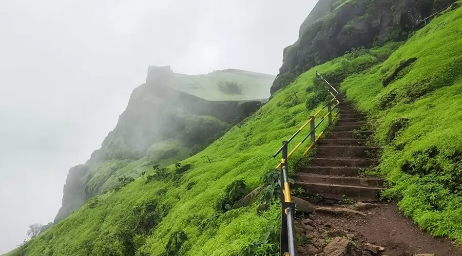

TORNA FORT

|

|

|
 |
Historical Significance:
This fort is believed to have been constructed by the Shiva Panth in the 13th century. A Menghai Devi temple, also referred to as the Tornaji temple, is situated near the entrance of the fort. Malik Ahmed, a Bahamani ruler, captured this fort during the reign of Alauddin Khilji during the late 1470s.In 1646, Shivaji captured this fort at the age of sixteen, thus making it one of the first forts that would become one of the forts of the Maratha empire. Shivaji renamed the fort 'Prachandagad' as Torna, and constructed several monuments and towers within it.
In the 18th century, the Mughal empire briefly gained control of this fort after the assassination of Shivaji's son Sambhaji raje. Aurangzeb, the then Mughal emperor, renamed this fort Futulgaib in recognition of the difficult defense the Mughals had to overcome to capture this fort. It was restored to the Maratha confederacy by the Treaty of Purandar.
Tourism:
The Torna Fort is a popular destination for trekkers specially after the south-west monsoon, from September to December. Staying at fort isn't allowed as per orders of District Collector, everyone is asked to leave the fort after 5:00pm. The Raigad, Lingana, Rajgad, Purandar fort, Sinhagad are some forts that can be seen from Torna. Other places that are visible from the fort include the Budhla Machi, Zungar Machi, Kothi Darwaja, Konkan Darwaja, Menghai goddess temple, Bini Darwaja, Sadar, and the Toranji goddess temple.